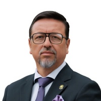

Mauricio Xavier Ordóñez Fuentes
Ficha junto a las de Mishel Andrea Mancheno Dávila, Luis Esteban Torres Cobo, Bertha Vélez Vélez, Rosa Cecilia Baltazar Yucailla, Edwin Estuardo Jarrín Rivadeneira y Carlos Alfredo Pulley Iturralde. Cada dato lleva el sello Abierto y la línea de fuente: institución, documento y fecha. Lufy no tiene en el archivo la copia de esos documentos ni su huella SHA-256, y no se inventa esa huella. No hay enlace a un sitio oficial.
Cómo leer esta ficha
- 1Abierto es el único sello de esta página. Falta la copia archivada con SHA-256.
- 2La línea de fuente nombra institución, documento y fecha. No abre un sitio oficial.
- 3Lo que ninguna fuente leída dice, queda escrito como abierto. No se completa.
Retrato

Retrato de la ficha oficial, alojado en Lufy. Esta ficha no enlaza el original.
Nombre
Abierto
El nombre completo es Mauricio Xavier Ordóñez Fuentes. El informe dice: «Proponente: Asambleísta Mauricio Xavier Ordóñez Fuentes».
Fuente del nombre completo: Asamblea Nacional, Informe Técnico-Jurídico No Vinculante Nro. 040-INV-CGUTL-AN-2026, Quito, 11 de marzo de 2026.
Abierto
La ficha del blog escribe «Xavier Ordoñez Fuentes», sin «Mauricio» y sin acento en la o. La página es «Blog de mauricio.ordonez». La página no trae fecha de publicación. El blog tiene entradas hasta el 27 de febrero de 2026.
Fuente: Asamblea Nacional, blog oficial del asambleísta, página «Blog de mauricio.ordonez». Sin fecha de publicación.
Circunscripción y organización
Abierto
El blog escribe «Asambleísta por América Latina El Caribe y África» y «Acción Democratica Nacional ADN», así, sin acento en Democratica. También escribe: «Actualmente ocupa una curul en la Asamblea Nacional del Ecuador como representante de los ecuatorianos que residen en América Latina y el Caribe.» «Actualmente» es la palabra del blog. La nota de El Universo del 2 de octubre de 2026 no trae esa frase.
Fuente: Asamblea Nacional, blog oficial del asambleísta, página «Blog de mauricio.ordonez». Sin fecha de publicación.
Abierto
«Acción Democratica Nacional ADN» es la organización que el blog escribe en esta ficha. Es la misma organización que aparece en las fichas de Mishel Andrea Mancheno Dávila y Luis Esteban Torres Cobo. Los datos de esta página son los de Mauricio Xavier Ordóñez Fuentes.
Fuente de la grafía en esta ficha: Asamblea Nacional, blog oficial del asambleísta, página «Blog de mauricio.ordonez». Sin fecha de publicación.
Comisión
Abierto
La página de comisiones escribe «Mauricio Xavier Ordoñez Fuentes», sin acento en la o de Ordoñez. Lo lista en la «Comisión de Relaciones Internacionales y Movilidad Humana», después del vicepresidente. No lleva el rótulo de presidente ni el de vicepresidente. Esa ficha no escribe circunscripción junto a su nombre.
Fuente: Asamblea Nacional, «Comisiones Especializadas Permanentes y Ocasionales». Last-Modified de esa página: sábado 3 de octubre de 2026, 07:48 PT.
Fiscalización
Abierto
El 2 de octubre de 2026 El Universo escribe: «El pedido de fiscalización lo presentó el asambleísta Xavier Ordóñez (ADN)» y «La moción la presentó el legislador Xavier Ordóñez (ADN)». Esa nota no dice provincia ni circunscripción. La moción fue respaldada por 83 votos y tuvo 45 en contra. Es el resultado de la moción. Esta ficha no lo presenta como su voto nominal.
Fuente: El Universo, «Asamblea fiscalizará supuestos cobros duplicados del peaje Oswaldo Guayasamín, en Quito», 2 de octubre de 2026, 12h44.
Propuesta
Abierto
El mismo informe dice que el 4 de marzo de 2026 remitió el «Proyecto de Ley Orgánica Reformatoria a la Ley Orgánica contra la Trata de Personas y el Tráfico Ilícito de Migrantes».
Fuente: Asamblea Nacional, Informe Técnico-Jurídico No Vinculante Nro. 040-INV-CGUTL-AN-2026, Quito, 11 de marzo de 2026.
Qué queda abierto
Abierto
Período personal en años. No apareció en las fuentes leídas.
Abierto
Su voto nominal, a favor, en contra o abstención. No apareció en las fuentes leídas.
Abierto
Cargo de mesa directiva o presidencia de comisión. La página de comisiones del 3 de octubre de 2026 lo lista en Relaciones Internacionales y Movilidad Humana, sin el rótulo de presidente ni el de vicepresidente. Ese cargo no apareció.
Documentos
La línea de fuente queda en esta página. Cuando Lufy guarde una copia, aquí se podrá abrir y ver su huella SHA-256. Hoy esa copia no está, y no se publica una huella inventada. El orden es del más reciente hacia atrás.
Asamblea Nacional, comisiones
«Comisiones Especializadas Permanentes y Ocasionales». Escribe «Mauricio Xavier Ordoñez Fuentes», sin acento en la o. Lo lista en la «Comisión de Relaciones Internacionales y Movilidad Humana», sin rótulo de presidente ni de vicepresidente.
Last-Modified: sábado 3 de octubre de 2026, 07:48 PT.
El Universo
«Asamblea fiscalizará supuestos cobros duplicados del peaje Oswaldo Guayasamín, en Quito». Escribe «Xavier Ordóñez (ADN)». La moción, 83 votos y 45 en contra.
2 de octubre de 2026, 12h44.
Asamblea Nacional, informe
Informe Técnico-Jurídico No Vinculante Nro. 040-INV-CGUTL-AN-2026, Quito. «Proponente: Asambleísta Mauricio Xavier Ordóñez Fuentes». El 4 de marzo de 2026 remitió el proyecto sobre trata de personas y tráfico ilícito de migrantes.
11 de marzo de 2026.
Asamblea Nacional, blog oficial del asambleísta
Página «Blog de mauricio.ordonez». Escribe «Xavier Ordoñez Fuentes», «Asambleísta por América Latina El Caribe y África» y «Acción Democratica Nacional ADN». La página no trae fecha de publicación. El blog tiene entradas hasta el 27 de febrero de 2026.
Cambios
- 3 de octubre de 2026. Primera publicación de esta ficha, junto a las de Mishel Andrea Mancheno Dávila, Luis Esteban Torres Cobo, Bertha Vélez Vélez, Rosa Cecilia Baltazar Yucailla, Edwin Estuardo Jarrín Rivadeneira y Carlos Alfredo Pulley Iturralde. Todos los datos van como ABIERTO.
- 3 de octubre de 2026. La página de comisiones, Last-Modified de ese sábado a las 07:48 PT, escribe «Mauricio Xavier Ordoñez Fuentes» y lo lista en Relaciones Internacionales y Movilidad Humana, sin rótulo de presidente ni de vicepresidente. Un cargo de mesa directiva no apareció.
¿Encontraste un error? Escríbenos desde Ko-fi (se abre en otra pestaña) y lo corregimos en público. Política de correcciones.
Esta ficha es gratis
Lufy es independiente. Si este trabajo te sirve, puedes apoyar el archivo o leer el libro. El dato no se cobra.